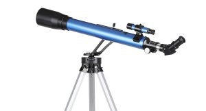
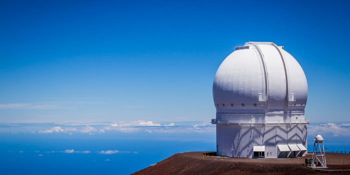

L'astronomie est un groupe de tout ce qui est dans l'Espace comme une étoile,une planète ,une galaxie ect
Nous observons l'espace avec un télescope ou grace à un observatoire
le télescope
ceci est un observatoir
Issac Newton est né le 4 janvier 1643 au Royaume-Uni, mort le 31 mars à Kensington, inventa le télescope submersible

ceci est newton
Le système solaire est un ensemble de planètes,du Soleil ,d'etoiles et de lunes

le système solaire
Les planètes du système solaire sont
La Terre est notre planète donc nous somme dans le système solaire
Le Soleil est une étoile parmis beaucoup d'étoile,le Soleil est constituée de feu et de lave,elle moura dans des millions d'année
La Voie Lactée est notre galaxie ,donc le système solaire est dans la Voie Lactée
La Voie Lactée est une galaxie donc,cette galaxie et méme les autres galaxies,contiennent des planètes,des étoile,des constéllation etc

La Voie Lactée
Une constellation c'est un ensemble d étoiles qui forment quelque chose,il y a beaucoup de constellation dans l'espace

la constellation du lion